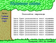

If you somehow linked to a computer life, then surely in this section, you will read anything for the soul. Of course, the main focus of my articles is on programming, hacking and algorithms, but there are other articles on the topic.
 | Here the articles about algorithms. Almost all the articles in detail and understand itemized. I consider not only the foundation of algorithms, but also their time, the usefulness of each. |
 | After long using window$ quite difficult to work with Linux. Articles of this section are designed to make life easier for people, the rolling of window$ in Linux, as well as help some of inveterate linuxoid's.
Also, I want to say that this section is "live" - that is, Articles will try to maintain the maximum date and continuously updated. |
 | Articles on Delphi programming environment. Essentially, these articles for beginners, but is currently pros may find itself anything interesting ... |
Articles about programming in the language of PHP. Basically, this article for beginners. |
 | Articles about hacking, friking, reserving, cracking and protection from all this. You can find articles on the "hack without Hacks", that is, easily on the attacker. Similarly, it is here that you can read the article on the web hacking and hacking ICQ. |
 | All about computer music and it's production process. Here you can find descriptions of some tracker programms and articles for beginners |
|  | Articles on design, web design, redesign, etc. Here are the lessons of Photoshop, GIMP etc. |
 | This section lined "Instructions" to my LAN. They rely on, so that even the most shrewd user nothing has been able to set his computer after reinstall windows, etc.
Some of the articles are adapted to a more or less universal type, and some lined live in, as we have in LAN.
If you are LAN-administrator and you lazily write docks - NB in this section. Maybe you will find something for your users ... |
 | Articles are not lost in other sections. This is a rare article on programming, but still well as they most often linked to a computer. |